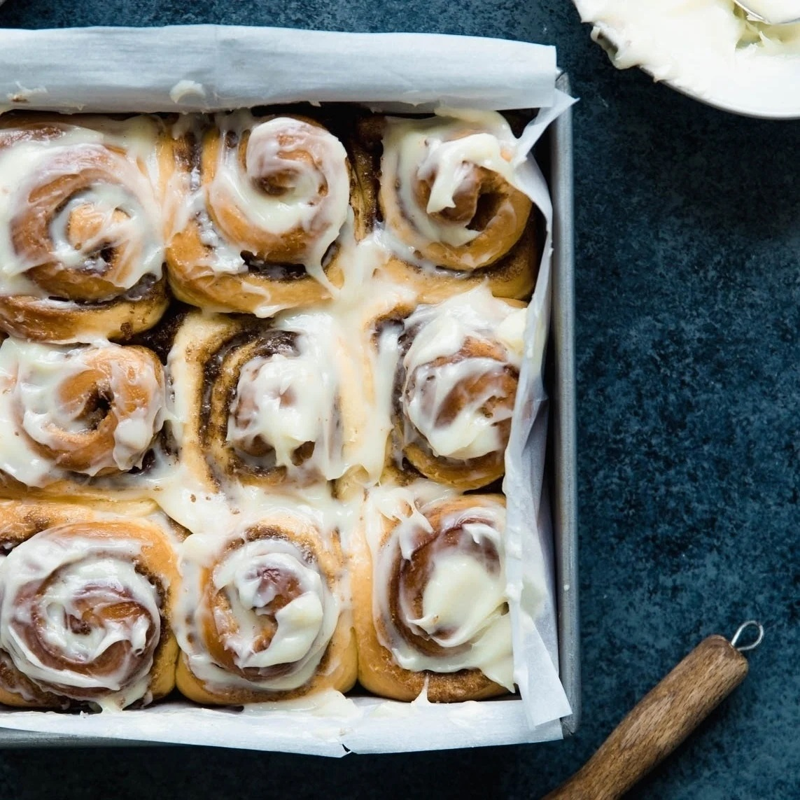
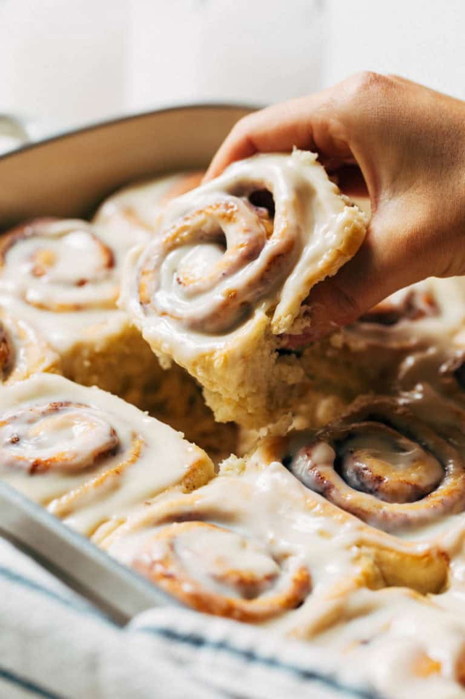
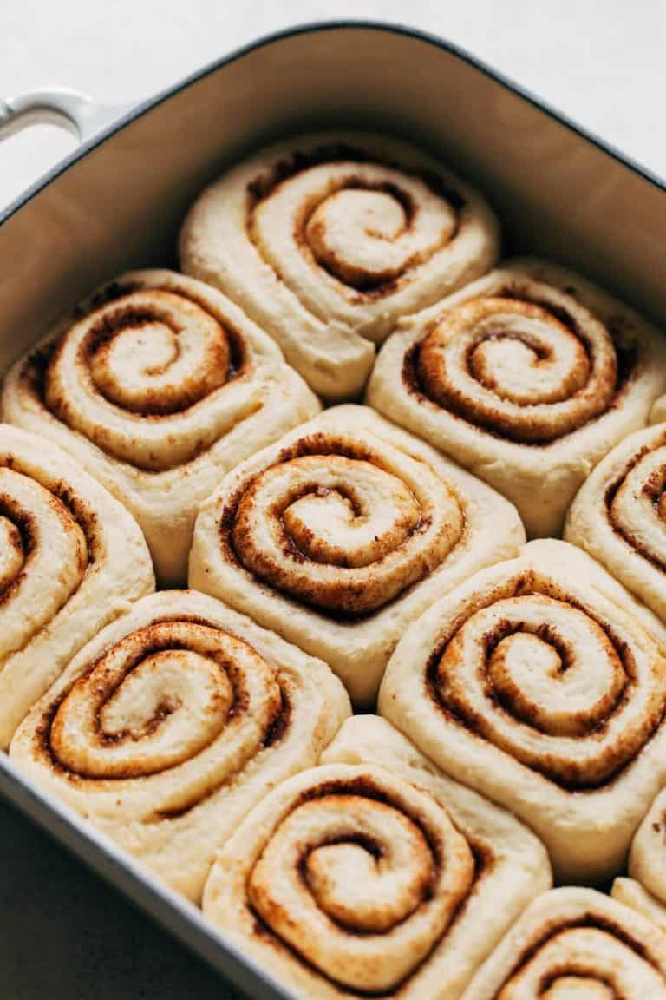

The BEST cinnamon rolls in the WORLD. Big, fluffy, soft and absolutely delicious. You’ll never go back to any other recipe once you try this one! These rolls puff up nice and tall but are completely soft all the way through. They’re so tender and gooey all throughout and each bite just melts in your mouth. They are warm and ready in under 2 hours, require simple ingredients, and are made completely by hand. So not only are the perfect for a special occasion, but these rolls can be enjoyed as a treat at any time of year. In the end you’re left with soft and fluffy cinnamon rolls your whole family will enjoy!


Prep time: 2 hours Cook time: 30 minutes Serving: 10-15 servings
INGREDIENTS
- 2 cups whole milk, room temp
- 1/2 cup melted butter
- 1/2 cup sugar
- 2 1/4 tsp instant yeast
- 5 cups AP flour
- 1 tsp baking powder
- 2 tsp salt
- 3/4 cup light brown sugar
- 3/4 cup unsalted butter, room temp
- 2 tbsp cinnamon
- 1 cup powdered sugar
- 4oz cream cheese, room temp
- 2 tbsp unsalted butter
- 4 tbsp milk
- 1 tsp vanilla
Dough:
Filling:
Icing:
INSTRUCTIONS
- Mix together 2 cups of milk with 1/2 cup melted butter and add 1/2 cup sugar and 2 1/4 tsp instant yeast. Mix it with a whisk and let it sit for 10 minutes.
- In a different cup mix together 4 cups flour and 2 tbsp salt.
- Add the wet ingredients to the dry ones and mix until smooth. Cover with plastic film and let it rise for 1 hour.
- Mix together 3/4 cup room temp butter with 3/4 cup brown sugar and 2 tbsp of cinnamon. This will be the filling.
- After the dough has risen add 1/2 cup flour and 1 tsp of baking powder and start kneading the dough. It will start off as dry and then become sticky, but that is normal. Knead for 10-15 minutes until it's no longer sticky. It should be smooth and bounce back when you poke it with a finger. Roll out the dough and spread the filling evenly.
- Roll the dough tightly using your palm to push it forward.
- Slide some dental floss or clean thread unter the roll and cross the ends of the thread over each other to cut the roll into even pieces, or simply use a knife.
- Place the rolls in a buttered tin and cover it to let them proof for 40 minutes. After, add the heavy whipping cream by pouring it into the tin.
- Cover the tin with foil and bake for 25-30 minutes at 350°F. They should be golden brown when fully baked. Don't bake over 35 minutes!
- For the icing, add to a bowl 4 tbsp milk, 4 oz cream cheese, 2 tbsp butter, 1 cup powdered sugar and 1 tsp vanilla. Mix at medium speed until everything is well combined. Let the rolls cool down a bit before adding the icing. Enjoy!